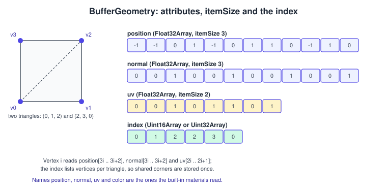
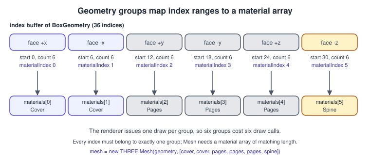
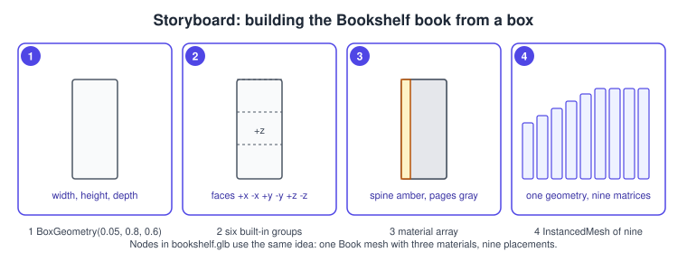
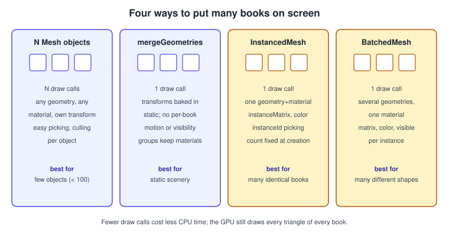

three.js Geometry
|
This content was generated with the assistance of AI and should be verified against the official documentation before being relied on in production. |
Geometry is the shape half of a Mesh: the list of vertices, how they connect into triangles and what data each vertex carries (normal,
texture coordinate, colour, and anything you add). In three.js there is exactly one class for all of it, BufferGeometry, whose data lives
in typed arrays that are uploaded to the GPU once and reused every frame. The built-in shapes (BoxGeometry, SphereGeometry and the rest)
are subclasses that fill those arrays for you; loaders such as GLTFLoader produce the same objects from files. This page shows how the
arrays are organised, how to use and build geometries, how to change them without wasting memory, how groups let one geometry use several
materials, and how to draw many books cheaply with merging, InstancedMesh and BatchedMesh.
The facts were checked in November 2026 against three.js r187 (npm three@0.187.0). The code is JavaScript with ES modules and an import map
(or Vite, see three.js Getting Started); it runs in any browser with WebGL 2 (Chrome 56,
Firefox 51, Safari 15, Edge 79 and later) from a local web server. The geometry API is the same for WebGLRenderer and WebGPURenderer. In
the Bookshelf running example this page covers the step "many instanced books": a book built from a box with a material per face group, a
shelf of nine instances like those of bookshelf.glb, and dust particles for the later post-processing step. The
tree that holds these objects is explained in
three.js Scene Graph and Transforms; the general vertex-data concepts
(winding order, interleaving, normals, tangents) are in Meshes and Vertex Data, and the raw
WebGL equivalent of what three.js does underneath is in
Buffers, Attributes, Uniforms and VAOs.
Anatomy of a BufferGeometry

A BufferGeometry holds:
-
Attributes, a named set of
BufferAttributeobjects. Each wraps a typed array and anitemSize, the number of array elements that belong to one vertex: 3 forpositionandnormal, 2 foruv, 3 or 4 forcolor. All attributes of one geometry must describe the same number of vertices. -
An optional index, an array of vertex numbers that lists the triangles. With an index, a vertex shared by several triangles is stored once and referenced many times; without one, every three consecutive vertices form a triangle and a shared corner is duplicated.
-
Groups, ranges of the index (or of the vertices) that use different materials.
-
A draw range, bounds (
boundingBox,boundingSphere) and optional morph attributes.
The attribute names position, normal, uv and color are the ones the built-in materials read. Any other name is yours to use in a
custom shader (see three.js Custom Shaders). Always use
setAttribute( name, attribute ) and getAttribute( name ) rather than writing to the attributes object.
| Method | Purpose |
|---|---|
|
Manage the named attributes. |
|
Set or read the index. Passing a plain array chooses a 16-bit index unless a value needs 32 bits, in which case a 32-bit index is used. WebGL 2 supports 32-bit indices natively. |
|
Generates |
|
Fill the bounds. Used for frustum culling and raycasting; the engine computes them when needed, but you must recompute them after changing positions. |
|
One-time transforms of the vertex data. Do not use them for per-frame motion; use the node transform instead. |
|
Returns a new geometry with the index expanded, giving flat shading per face. |
|
Draws only part of the vertices (non-indexed) or indices (indexed). |
|
Defines material groups. |
|
Duplicate, or free the GPU buffers. |
Built-in geometries
The classes below all extend BufferGeometry. The constructor arguments are positional; segment counts trade smoothness for vertex count.
| Class | Main constructor parameters (defaults) | Typical use |
|---|---|---|
|
|
Books, boards, crates. Has six groups, one per face. |
|
|
Floors, cards, billboards, displaced terrain. |
|
|
Balls, sky domes, light bulbs. |
|
|
Lamp stems, pencils, pipes. |
|
|
Rings and decorative shapes. |
|
|
Discs, selection rings. |
|
|
Character colliders and rounded props. |
|
a list of 2D points revolved around the y axis |
Vases, bottle and lamp-shade profiles. |
|
a |
Cut-out letters, logos, bookmarks. |
|
a |
Cables and ribbons along a path. |
|
radius and a detail level |
Dice, low-poly spheres. |
|
a source geometry |
Outlines and wireframes drawn with line materials. |
Some geometry classes live in the addons rather than the core: ConvexGeometry, DecalGeometry, ParametricGeometry, RoundedBoxGeometry
and TextGeometry, imported from three/addons/geometries/. Their import paths and constructor details are in the three.js documentation, and
TextGeometry additionally needs a font loaded with FontLoader. A minimal use of the primitives:
import * as THREE from 'three';
const board = new THREE.BoxGeometry( 1.2, 0.04, 0.4 ); // shelf board
const lampStem = new THREE.CylinderGeometry( 0.01, 0.01, 0.5, 12 );
const bulb = new THREE.SphereGeometry( 0.05, 16, 8 );
const floor = new THREE.PlaneGeometry( 4, 4 );
floor.rotateX( -Math.PI / 2 ); // PlaneGeometry faces +z; make it face +y
console.log( board.attributes.position.count ); // 24 vertices: 4 per face
console.log( board.index.count ); // 36 indices: 12 trianglesSource: three.js docs: BoxGeometry
A box has 24 vertices rather than 8 because each face needs its own normals and texture coordinates; sharing the corners would blend the normals and ruin the flat look.
Building a custom geometry
Writing the arrays yourself is straightforward and is the most direct way to learn what the library does. The example builds a bookmark
ribbon as a grid of vertices with positions, normals, texture coordinates and an index, then waves it every frame by rewriting position.
import * as THREE from 'three';
export function createRibbon( width = 0.04, length = 0.5, segments = 24 ) {
const columns = 2, rows = segments + 1;
const positions = new Float32Array( columns * rows * 3 );
const uvs = new Float32Array( columns * rows * 2 );
const indices = [];
for ( let r = 0; r < rows; r ++ ) {
for ( let c = 0; c < columns; c ++ ) {
const i = r * columns + c;
positions.set( [ ( c - 0.5 ) * width, - r / segments * length, 0 ], i * 3 );
uvs.set( [ c, 1 - r / segments ], i * 2 );
}
}
for ( let r = 0; r < segments; r ++ ) {
const a = r * columns, b = a + 1, c = a + columns, d = c + 1;
indices.push( a, c, b, b, c, d ); // counter-clockwise as seen from +z
}
const geometry = new THREE.BufferGeometry();
geometry.setAttribute( 'position', new THREE.BufferAttribute( positions, 3 ) );
geometry.setAttribute( 'uv', new THREE.BufferAttribute( uvs, 2 ) );
geometry.setIndex( indices );
geometry.computeVertexNormals(); // creates the normal attribute
geometry.attributes.position.setUsage( THREE.DynamicDrawUsage ); // we will rewrite it every frame
return geometry;
}
export function waveRibbon( geometry, timeSeconds ) {
const position = geometry.attributes.position;
const segments = position.count / 2 - 1;
for ( let r = 0; r <= segments; r ++ ) {
const z = Math.sin( timeSeconds * 3 + r * 0.5 ) * 0.02 * ( r / segments );
position.setZ( r * 2, z ); // left vertex of the row
position.setZ( r * 2 + 1, z ); // right vertex of the row
}
position.needsUpdate = true; // upload the changed array
geometry.computeVertexNormals(); // keep lighting consistent
geometry.computeBoundingSphere(); // culling uses it
}
const ribbon = new THREE.Mesh( createRibbon(), new THREE.MeshStandardMaterial( { color: 0xb91c1c, side: THREE.DoubleSide } ) );
// renderer.setAnimationLoop( ( t ) => { waveRibbon( ribbon.geometry, t / 1000 ); renderer.render( scene, camera ); } );Source: three.js docs: BufferGeometry
Points worth noting:
-
Winding. A triangle is front-facing when its vertices appear counter-clockwise from the viewer. Reversing the order makes the face invisible under the default
FrontSidematerial;DoubleSidedraws both at twice the fragment cost. -
needsUpdate. The data is copied to the GPU only whenattribute.needsUpdate = trueis set; changing the typed array alone does nothing.setUsage( THREE.DynamicDrawUsage )is a hint for buffers you rewrite often;addUpdateRangelets you upload only the changed slice of a large attribute. -
Resizing is impossible. The GPU buffer has a fixed size. To change the vertex count, create a new geometry (and dispose the old one) or allocate a larger array up front and shrink the drawn part with
setDrawRange. -
Vertex count versus index type. A geometry with more than 65,535 vertices needs a 32-bit index.
setIndexwith a plain array picks the right type; if you build a typed array yourself, chooseUint32Arrayin that case. -
Normals.
computeVertexNormalson a non-indexed geometry produces flat shading; to get smooth normals with sharp creases usetoCreasedNormalsfromBufferGeometryUtils. If a material uses a normal map and the geometry hasposition,normal,uvand an index,geometry.computeTangents()adds the tangents; without a tangent attribute three.js derives the tangent frame in the fragment shader.
Custom attributes
Any additional per-vertex data is just another attribute. The vertex shader of a ShaderMaterial (WebGLRenderer only; see
WebGPURenderer and TSL for the WebGPU alternative) reads it by name:
const sway = new Float32Array( ribbon.geometry.attributes.position.count );
for ( let i = 0; i < sway.length; i ++ ) sway[ i ] = Math.floor( i / 2 ) / 24; // 0 at the top, 1 at the free end
ribbon.geometry.setAttribute( 'aSway', new THREE.BufferAttribute( sway, 1 ) );
// GLSL: attribute float aSway; (GLSL 1.00 style; with glslVersion GLSL3 write: in float aSway;)Source: three.js docs: BufferAttribute
Groups and material arrays

A Mesh normally has one material. If you pass an array of materials, the geometry must have groups: each group names a range of the index
and the entry of the array to use. The renderer then issues one draw call per group. BoxGeometry, SphereGeometry and others create groups
for you (a box has six, one per face, in the order +x, -x, +y, -y, +z, -z); for your own geometry call addGroup( start, count, materialIndex )
so that every index belongs to exactly one group.

-
Create a
BoxGeometrysized like the book (thickness, height, depth). -
Note that it already contains six groups.
-
Build a material array with the cover, spine and pages materials and map the faces to it.
-
Place nine copies with different heights using an
InstancedMesh(next section).
import * as THREE from 'three';
const loader = new THREE.TextureLoader();
function load( url ) {
const t = loader.load( url );
t.colorSpace = THREE.SRGBColorSpace; // colour textures are sRGB; data textures are not
t.anisotropy = 4;
return t;
}
// Textures are the PNG files shipped with the site (bookshelf-cover.png and friends).
const cover = new THREE.MeshStandardMaterial( { map: load( './bookshelf-cover.png' ), roughness: 0.6 } );
const spine = new THREE.MeshStandardMaterial( { map: load( './bookshelf-spine.png' ), roughness: 0.6 } );
const pages = new THREE.MeshStandardMaterial( { map: load( './bookshelf-pages.png' ), roughness: 0.9 } );
// BoxGeometry order: +x, -x, +y, -y, +z, -z. With thickness along x the covers are +x/-x,
// the spine is at -z and the fore-edge, top and bottom show pages.
const bookGeometry = new THREE.BoxGeometry( 0.05, 0.8, 0.6 );
const book = new THREE.Mesh( bookGeometry, [ cover, cover, pages, pages, pages, spine ] );
scene.add( book );The cover, spine and pages textures are available as
bookshelf-cover.png, bookshelf-spine.png
and bookshelf-pages.png; PNG files ship with the site, and a KTX2 version can be produced
by the reader with toktx (see three.js Textures and Color Management).
Material choices and PBR parameters are in three.js Materials and PBR. The Book mesh of
bookshelf.glb is built the same way: three primitives, which GLTFLoader turns into three child meshes that share geometry and material
across the nine books.


Each group costs a draw call and a material state change, so use groups for variety, not for hundreds of materials per object; the cheaper way to give different books different looks is per-instance colour or a texture atlas.
Many books: merging, instancing and batching

A scene with thousands of separate Mesh objects spends most of its frame time on the CPU, issuing draw calls and updating matrices. The
choices, from most flexible to cheapest:
| Technique | Draw calls | Per-object control | Use for |
|---|---|---|---|
Separate |
one per object (per group) |
everything: transform, material, visibility, events |
tens to a few hundred objects, anything interactive |
|
one per merged group |
none after merging; transforms are baked into the vertices |
static scenery such as the shelf boards |
|
one |
a matrix and optionally a colour per instance; one geometry and one material |
many copies of one shape: books, bullets, grass |
|
one |
a matrix, colour and visibility per instance, with several different geometries sharing a material |
many different shapes in one batch, for example three book sizes plus a lamp |
Merging static geometry
BufferGeometryUtils.mergeGeometries concatenates geometries into one. All inputs must have the same attributes with the same itemSize and
all must be indexed or all non-indexed, otherwise the function returns null. Bake each shape’s position into its vertices first, and pass
true as the second argument to keep one group per input (so each can keep its own material).
import * as THREE from 'three';
import * as BufferGeometryUtils from 'three/addons/utils/BufferGeometryUtils.js';
const boards = [];
for ( const y of [ 0, 0.5, 1.0 ] ) {
const g = new THREE.BoxGeometry( 1.2, 0.04, 0.4 );
g.translate( 0, y, 0 ); // bake the board position into the vertices
boards.push( g );
}
const merged = BufferGeometryUtils.mergeGeometries( boards, false );
if ( merged === null ) throw new Error( 'Geometries have incompatible attributes' );
const shelfBoards = new THREE.Mesh( merged, new THREE.MeshStandardMaterial( { color: 0x9a6b3c, roughness: 0.8 } ) );
scene.add( shelfBoards );
boards.forEach( ( g ) => g.dispose() ); // the inputs are no longer neededOther useful functions in the same module: mergeVertices( geometry, tolerance ) welds duplicate vertices of an imported mesh,
toCreasedNormals( geometry, creaseAngle ) smooths except across sharp edges, computeMikkTSpaceTangents computes tangents with the MikkTSpace
algorithm, interleaveAttributes places attributes in one shared buffer and estimateBytesUsed( geometry ) reports the memory a geometry
uses.
InstancedMesh
InstancedMesh( geometry, material, count ) draws count copies in a single call. Each instance has a 4x4 matrix in instanceMatrix, and
optionally a colour in instanceColor (created on the first setColorAt). The count is fixed at construction, but you can lower it later
to draw fewer. The example creates the shelf of nine books, each with a different height and colour, and finds the instance under the
pointer.
import * as THREE from 'three';
const heights = [ 0.8, 0.85, 0.9, 0.95, 1.0, 1.0, 1.0, 1.0, 1.0 ]; // y scale of each book, as in the GLB
const bookGeometry = new THREE.BoxGeometry( 0.05, 0.8, 0.6 );
const material = new THREE.MeshStandardMaterial( { roughness: 0.6 } ); // colour comes from the instances
const shelf = new THREE.InstancedMesh( bookGeometry, material, heights.length );
shelf.instanceMatrix.setUsage( THREE.DynamicDrawUsage ); // we will move books at run time
const m = new THREE.Matrix4();
const color = new THREE.Color();
heights.forEach( ( h, i ) => {
m.compose(
new THREE.Vector3( -0.45 + i * 0.07, 0.52 + 0.4 * h, 0 ), // position
new THREE.Quaternion(), // no rotation
new THREE.Vector3( 1, h, 1 ) // taller or shorter
);
shelf.setMatrixAt( i, m );
shelf.setColorAt( i, color.setHSL( i / heights.length, 0.55, 0.45 ) );
} );
shelf.instanceMatrix.needsUpdate = true; // required after changing matrices
shelf.instanceColor.needsUpdate = true; // and colours
shelf.computeBoundingSphere(); // refresh the bounds used for culling
scene.add( shelf );
// Picking: the intersection tells which instance was hit.
const raycaster = new THREE.Raycaster();
export function pickBook( pointerNdc, camera ) {
raycaster.setFromCamera( pointerNdc, camera );
const hit = raycaster.intersectObject( shelf )[ 0 ];
return hit ? hit.instanceId : -1; // index of the instance, or -1
}
// Move a single book later: read its matrix, change it, write it back.
export function pullOut( index, dz ) {
shelf.getMatrixAt( index, m );
m.elements[ 14 ] += dz; // translation z is element 14 of a column-major matrix
shelf.setMatrixAt( index, m );
shelf.instanceMatrix.needsUpdate = true;
}Source: three.js docs: InstancedMesh
Notes:
-
The whole
InstancedMeshis a single node in the scene graph. Individual instances are not nodes: they have no parent, nonameand novisibleflag; to hide one, scale it to zero or lowercountand swap it to the end. -
Frustum culling uses one bounding sphere for all instances. It is computed when first needed; if the instances move later, call
computeBoundingSphere()or the sphere can be stale and instances may be culled when they should not be. -
Raycasting tests every instance;
intersection.instanceIdidentifies the hit. For thousands of instances use a BVH library or GPU picking (see Interaction, Picking and Controls). -
Per-instance data beyond matrix and colour can be added as an
InstancedBufferAttributeand read in a custom shader. -
The
instanceMatrixupload is the cost: 64 bytes per instance each timeneedsUpdateis set, so update only on frames where something moved.
BatchedMesh
BatchedMesh renders different geometries in one draw call with one material. Space is reserved up front for the maximum number of instances
and the total vertex and index counts:
import * as THREE from 'three';
const small = new THREE.BoxGeometry( 0.05, 0.6, 0.45 );
const big = new THREE.BoxGeometry( 0.07, 0.8, 0.6 );
const lamp = new THREE.CylinderGeometry( 0.03, 0.05, 0.3, 12 );
// Constructor: maxInstanceCount, maxVertexCount, maxIndexCount, material.
const batch = new THREE.BatchedMesh( 64, 4000, 8000, new THREE.MeshStandardMaterial( { roughness: 0.6 } ) );
const smallId = batch.addGeometry( small ); // returns a geometry id
const bigId = batch.addGeometry( big );
const lampId = batch.addGeometry( lamp );
const m = new THREE.Matrix4();
for ( let i = 0; i < 20; i ++ ) {
const instance = batch.addInstance( i % 2 === 0 ? smallId : bigId ); // returns an instance id
batch.setMatrixAt( instance, m.makeTranslation( -0.5 + i * 0.06, 0.5, 0 ) );
batch.setColorAt( instance, new THREE.Color().setHSL( i / 20, 0.6, 0.5 ) );
}
batch.setMatrixAt( batch.addInstance( lampId ), m.makeTranslation( 0.6, 0.65, 0 ) );
batch.setVisibleAt( 3, false ); // hide one instance without removing it
scene.add( batch );Source: three.js docs: BatchedMesh
All geometries must share the layout of the first one: the same attributes with the same itemSize and normalized values, and the same
index usage. Space for each geometry is reserved when added; setGeometryAt throws if a new geometry does not fit, so reserve extra with the
optional arguments of addGeometry. Bounding volumes are not computed by default and are null until you call computeBoundingBox() or
computeBoundingSphere(). Negative scale in a matrix is not supported. deleteInstance, deleteGeometry and optimize() manage the
space; perObjectFrustumCulled (default true) and sortObjects (default true) control per-instance culling and sorting.
Points and lines
Points and lines use the same BufferGeometry: only the object class and the material change. The Bookshelf dust is a cloud of points:
import * as THREE from 'three';
const count = 500;
const positions = new Float32Array( count * 3 );
for ( let i = 0; i < count; i ++ ) {
positions[ i * 3 + 0 ] = ( Math.random() - 0.5 ) * 3;
positions[ i * 3 + 1 ] = Math.random() * 2;
positions[ i * 3 + 2 ] = ( Math.random() - 0.5 ) * 2;
}
const dustGeometry = new THREE.BufferGeometry();
dustGeometry.setAttribute( 'position', new THREE.BufferAttribute( positions, 3 ) );
const dust = new THREE.Points( dustGeometry, new THREE.PointsMaterial( {
color: 0xfff1d6, size: 0.01, sizeAttenuation: true, transparent: true, opacity: 0.6, depthWrite: false
} ) );
scene.add( dust );
export function drift( dt ) {
const p = dustGeometry.attributes.position;
for ( let i = 0; i < count; i ++ ) p.setY( i, ( p.getY( i ) + dt * 0.02 ) % 2 );
p.needsUpdate = true;
}Source: three.js docs: Points
With WebGLRenderer the rasterised size of a point is limited by the GPU (the ALIASED_POINT_SIZE_RANGE limit, often 64 pixels or more but
not guaranteed beyond 1). Line, LineSegments and LineLoop draw one-pixel lines: the linewidth property of LineBasicMaterial has no effect on
WebGL, so use Line2 with LineMaterial from three/addons/lines/ when you need thick lines. For many particles with their own size, colour and
lifetime, a custom shader or instanced quads are better than Points; compute-style simulation belongs to the WebGPU path.
Interleaved attributes and draw ranges
By default each attribute has its own buffer (the structure-of-arrays layout shown in the first figure). The GPU can also read all attributes of a vertex from one interleaved buffer, which improves cache behaviour for large meshes.
import * as THREE from 'three';
// position (3 floats) + uv (2 floats) per vertex = 5 floats = 20 bytes stride.
const data = new Float32Array( [
// x, y, z, u, v
-0.5, -0.5, 0, 0, 0,
0.5, -0.5, 0, 1, 0,
0.5, 0.5, 0, 1, 1,
-0.5, 0.5, 0, 0, 1
] );
const buffer = new THREE.InterleavedBuffer( data, 5 ); // stride in elements
const geometry = new THREE.BufferGeometry();
geometry.setAttribute( 'position', new THREE.InterleavedBufferAttribute( buffer, 3, 0 ) ); // itemSize 3, offset 0
geometry.setAttribute( 'uv', new THREE.InterleavedBufferAttribute( buffer, 2, 3 ) ); // itemSize 2, offset 3
geometry.setIndex( [ 0, 1, 2, 2, 3, 0 ] );
geometry.setDrawRange( 0, 3 ); // draw only the first triangleSource: three.js docs: InterleavedBuffer
A draw range is a cheap way to reveal a geometry progressively (a growing trail or line chart) without reallocating buffers.
Memory and disposal
geometry.dispose() frees the GPU buffers created for a geometry; the JavaScript typed arrays are ordinary garbage-collected memory. A
geometry shared by many meshes must be disposed once, when none of them is used again. Removing a mesh from the scene does not free its
geometry. BufferGeometryUtils.estimateBytesUsed gives a quick size check, and renderer.info.memory.geometries counts live geometries; the full
lifecycle is in three.js Performance and Disposal. WebGPURenderer consumes
the same geometry objects; the indirect property on a geometry (for indirect draws) is a WebGPU-only feature.
Common mistakes
-
Forgetting
needsUpdateafter editing an attribute, an instance matrix or an instance colour: the screen shows the old data. -
Stale bounds. Moving vertices or instances without recomputing
boundingSpheremakes objects pop out at the screen edge. Either recompute or setfrustumCulled = falseon that object. -
Wrong itemSize. A
positionarray of 12 numbers withitemSize 4is read as 3 vertices, not 4. -
Mutating a shared geometry.
translate,scaleorrotateXon a geometry change every mesh that uses it; clone first. -
Reallocating each frame. Creating a new
BufferGeometryor typed array per frame creates garbage and GPU uploads; mutate and mark instead. -
Groups that do not cover the index. A group range that skips indices leaves part of the mesh undrawn, and a material array shorter than the largest
materialIndexdraws nothing for that group. -
Using
InstancedMeshfor things that need individual visibility or events. Use separate meshes or aBatchedMeshwithsetVisibleAt. -
Counting triangles instead of calls. Reducing draw calls helps the CPU; GPU cost still scales with triangles and overdraw.
Where the books are outdated
The geometry chapters (PAR ch. 3, LTJ ch. 5 and 6, TCB ch. 2) are the part of the three.js books that changed most. The shapes and ideas are the same; the data model is not.
| Books show | Today | Notes |
|---|---|---|
|
|
|
|
|
Renamed in r66. |
|
|
Per-face data no longer exists; use a non-indexed geometry for flat shading. |
|
a material array and geometry groups |
Replaced in r85; |
|
|
Imported from |
|
|
Renamed in r72; for large particle systems see instancing and the shader pages. |
|
the same classes, imported from |
The core build is smaller; addons are ES modules. |
ThreeBSP and CSG helpers from the books |
community packages |
Constructive solid geometry is not part of three.js; evaluate maintained packages before relying on one. |
Particle effects built from many |
|
One draw call for thousands of objects. |
|
removed in r98 |
WebGL 2 is available in all current browsers; see WebGL Versions and Browser Support. |
The books predate InstancedMesh, BatchedMesh and the WebGPU renderer, none of which they cover. Their examples of editing geometry.vertices translate to editing geometry.attributes.position and setting needsUpdate.
See also
The scene that holds these meshes is in three.js Scene Graph and Transforms. Materials follow in three.js Materials and PBR; loading geometry from a file in Loading Models: glTF. The raw WebGL buffers behind all this are described in Buffers, Attributes, Uniforms and VAOs and the OpenGL counterpart in Buffers and Vertex Specification. Instancing in raw WebGL 2 is in WebGL 2 Advanced Features.
References
-
three.js docs, BufferGeometry: https://threejs.org/docs/pages/BufferGeometry.html
-
three.js docs, BufferAttribute: https://threejs.org/docs/pages/BufferAttribute.html
-
three.js docs, InstancedMesh: https://threejs.org/docs/pages/InstancedMesh.html
-
three.js docs, BatchedMesh: https://threejs.org/docs/pages/BatchedMesh.html
-
three.js docs, BufferGeometryUtils: https://threejs.org/docs/pages/module-BufferGeometryUtils.html
-
three.js docs, BoxGeometry: https://threejs.org/docs/pages/BoxGeometry.html
-
three.js docs, Points: https://threejs.org/docs/pages/Points.html
-
three.js docs, InterleavedBuffer: https://threejs.org/docs/pages/InterleavedBuffer.html
-
three.js manual, Custom BufferGeometry: https://threejs.org/manual/#en/custom-buffergeometry
-
three.js manual, Optimize Lots of Objects: https://threejs.org/manual/#en/optimize-lots-of-objects
-
three.js Migration Guide: https://github.com/mrdoob/three.js/wiki/Migration-Guide
-
three.js releases: https://github.com/mrdoob/three.js/releases
-
Tony Parisi, WebGL: Up and Running (O’Reilly, 2012): https://www.oreilly.com/library/view/webgl-up-and/9781449326487/
-
Jos Dirksen, Learning Three.js, 2nd edition (Packt, 2015): https://www.packtpub.com/en-us/product/learning-threejs-the-javascript-3d-library-for-webgl-second-edition-9781784392215
-
Jos Dirksen, Three.js Cookbook (Packt, 2015): https://www.packtpub.com/product/threejs-cookbook/9781783981182